Executive summary3
1. The key question5
2. A shifting landscape7
3. Competitive landscape10
4. Where AI falls short13
5. Lombard Odier's right to win19
6. The pilot: Bring Your AI Portfolio21
7. Deliverables and how we will produce them23
8. Economics and KPIs25
9. Risks and mitigations27
10. Decision requested from the Partners28
Appendix A. Client interview guide29
Appendix B. AI answer audit protocol30
Appendix C. Methodology and data31
Appendix D. Sources32
Page numbers are indicative of the printed A4 edition. All analyses, data files and the code used to produce every exhibit are published alongside this report in the Report/analysis and Report/data folders of the project repository, so that every figure can be reproduced and challenged.
Each chapter opens with its conclusion. Exhibits carry an action title stating what the data shows, followed by the source. Numbers in square brackets refer to the numbered sources in Appendix D. Where we rely on our own judgement, for example in the competitive scoring, we say so explicitly and propose how the judgement will be tested during the first month of the project.
Next generation clients already ask an AI assistant how to invest. The assistant gives a competent answer for liquid markets and a weak one for everything else. Lombard Odier should stop arguing against AI and start competing on the ground where AI is structurally weakest: building, sourcing and running diversified allocations that include genuine alternative assets. We propose to prove this with a twelve week pilot, Bring Your AI Portfolio, and to ask the Partners for a go or no go decision in January 2027.
Reposition the investment conversation from "trust us" to "test us". In the Bring Your AI Portfolio pilot, a prospect or next generation client brings the allocation their AI assistant proposed. The banker compares it, live and transparently, with a Lombard Odier allocation that integrates alternatives, using a purpose built comparison tool: stress tests, correlation, liquidity schedule and the commitment plan an AI cannot produce. The client leaves with a prompt pack that invites their own AI to challenge our proposal. Effects are measured against a matched control group approached in the usual way.
Today: approve the twelve week project, a cash budget of about CHF 120,000, access to anonymised client data, and two sponsors (one Partner, one Head of Investment Solutions). In week 12: decide whether to roll out the approach to all next generation relationships in 2027, based on predefined go criteria described in Chapter 10.
Our notes started with a blunt client question: in the age of AI, why would I need a private bank to invest my money? We turned it into a question that a team of ten can answer in three months and that leads to a decision.
Three forces converge. First, generative AI has become a mass market adviser: OpenAI reported more than 700 million weekly ChatGPT users by mid 2025, and "practical guidance" is the largest category of use, at about 29% of messages [11]. Second, the wealth transfer is accelerating: Capgemini estimates that 30% of next generation high net worth individuals will have inherited by 2030 and 63% by 2035 [5]. Third, alternatives are being packaged for individuals at an unprecedented pace, through evergreen funds, ELTIFs and tokenised vehicles [16, 17, 18]. A next generation client can therefore receive a credible looking allocation, including an "alternatives" sleeve, in seconds and for free. If the private bank's investment pitch still rests on access to research and a well constructed equity and bond portfolio, the pitch is already obsolete.
The question also matters for profitability. Swiss private banks managed a record CHF 3.5 trillion in 2025, yet their average cost income ratio rose to about 78% and profits declined [19]. KPMG notes that AI has so far brought hardly any measurable financial benefit to Swiss private banks [19]. Growth must therefore come from winning wallet share, not only from cutting cost.
We focus on the investment value proposition only. The role of Lombard Odier in security, custody, credit and wealth planning is not questioned in this work; clients and AI tools alike recognise that these services require a regulated institution. We also take the product range as given. Lombard Odier already offers private assets, hedge funds and structured products. The problem is not what we offer, but how we pitch and deliver diversified allocations that include these products to clients who use AI as their first adviser.
The target segment is the next generation of existing client families (heirs and spouses aged roughly 25 to 45) and young entrepreneurs with liquidity events, typically with CHF 1 million to CHF 25 million of investable assets.
We broke the key question into four sub questions, each owned by a workstream of two or three associates. Each sub question has a hypothesis that the pilot is designed to confirm or reject.
This report combines desk research from more than 40 public sources, a quantitative analysis of 17 years of market data, simple cash flow and option pricing models, and a competitive review. It does not yet include client interviews or internal Lombard Odier data; both are built into the first month of the plan.
The next generation inherits more, switches more readily, prefers alternatives and consults AI first. At the same time, alternatives are becoming accessible without a private bank. The window to define the bank's role is the next three to five years.
UBS estimates that about USD 83 trillion will change hands over the next 20 to 25 years, of which USD 74 trillion between generations and USD 9 trillion between spouses [3]. In the United States alone, Cerulli projects USD 124 trillion of transfers through 2048, of which USD 105 trillion to heirs [4]. At the very top, 91 people became billionaires through inheritance in the year to April 2025, receiving almost USD 298 billion [6].
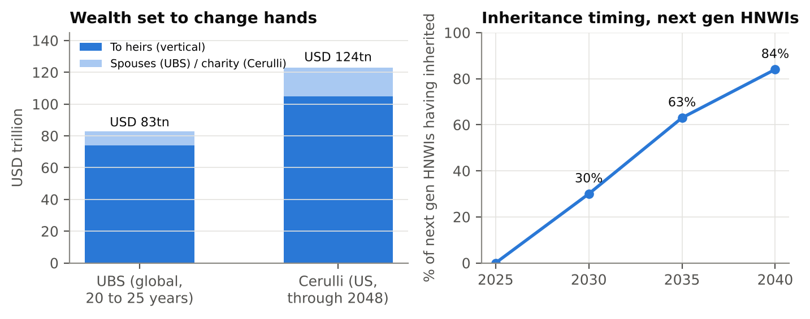
The more important number is loyalty. Capgemini's 2025 survey of more than 6,400 high net worth individuals, including about 5,500 next generation respondents, found that 81% of inheritors plan to move assets to a different firm within one to two years of inheriting [5]. EY's 2025 global wealth survey points in the same direction, with Millennials more likely to switch providers than any other generation [10]. For Lombard Odier, whose family clients often span three generations, each relationship that is not converted at the moment of transfer is lost wealth.
AI is not a future channel; it is the present one. In the UK Investor Index 2025, which surveyed investors with at least GBP 10,000 invested, ChatGPT use for investing rose to 33% of all investors and 70% of those aged 18 to 34, and 77% believe ChatGPT could provide reliable financial advice [9]. The World Economic Forum found that 41% of Gen Z and Millennial investors would allow an AI assistant to manage their investments, against 14% of Baby Boomers [8]. EY reports that 60% of wealth clients globally expect AI to be integrated into their wealth manager's services, with Millennials and Gen X leading [10].
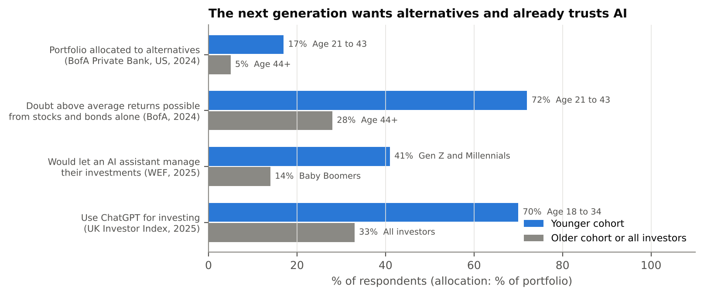
Search behaviour is shifting as well. Gartner predicted in 2024 that traditional search engine volume would fall by 25% by 2026 as users move to AI assistants [14]. For a private bank, this changes how prospects form their shortlist: the first opinion about whether to use a private bank, and which one, may be formed in a conversation with an AI before any human contact.
Generational preferences reinforce the point. The Bank of America 2024 study found that 93% of younger wealthy investors plan to increase alternative allocations in the coming years [7]. The next generation is therefore simultaneously the most AI native and the most alternatives hungry client segment. That combination is the opportunity.
Access to alternatives, historically the private bank's strongest argument, is being unbundled. Assets in evergreen private market funds doubled from USD 267 billion in 2022 to USD 534 billion in 2025 according to PitchBook data, and a record 123 evergreen funds launched in 2025 [16]. Morningstar and PitchBook see a path to more than USD 1 trillion within five years [16]. In Europe, the ELTIF 2.0 regime that applied from January 2024 brought the number of registered ELTIFs to 159 by March 2025 [17], with assets of about EUR 34 billion by end 2025 [17]. Bain estimates that alternative assets held by private wealth investors will triple from about USD 4 trillion to USD 12 trillion by 2034 [15], even though individuals still typically allocate less than 5% to alternatives [46].
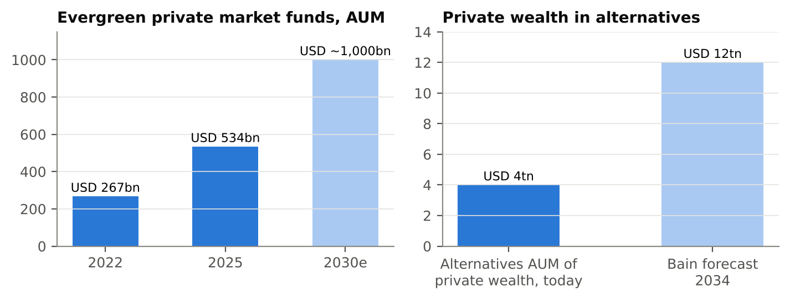
Tokenisation adds a further layer. In 2025 Citi and SIX Digital Exchange announced a platform to tokenise and custody pre IPO shares, with an initial focus on Switzerland and Asia [18]. Each of these developments lowers the minimum ticket and the friction of access. None of them solves the questions of which manager, how much, when to commit and how to manage the liquidity of a partly illiquid portfolio over time.
The Swiss industry enters this period with record assets but weaker economics. KPMG and the University of St. Gallen report that Swiss private banks managed about CHF 3.5 trillion in 2025, that revenues grew by only 1.5% while costs rose by 3%, and that the number of private banks fell below 80 for the first time [19]. PwC attributes much of the pressure at small and mid sized banks to falling interest income [19]. Regulation is technology neutral but demanding: FINMA's Guidance 08/2024 expects supervised institutions using AI to maintain an inventory, risk classification, testing, explainability and clear accountability [37], while FinSA suitability rules apply to every recommendation, whether or not it was produced with AI support [38].
A private bank cannot win the next generation on access alone, nor on liquid asset advice. It can win on the integration of alternatives into a whole portfolio, delivered with the transparency and speed an AI native client expects and with the accountability that only a regulated adviser can offer.
Lombard Odier competes on three fronts at once: with larger Swiss and global banks that are investing heavily in alternatives and AI, with platforms that sell access without advice, and with general purpose AI that gives advice without access. Only the first group combines both, and it is where the battle for the next generation will be decided.
UBS is the scale reference, with about USD 7 trillion of invested assets at the end of 2025 [20]. It won Euromoney's "world's best for next gen" award in both 2025 and 2026 [23], is a shareholder in iCapital [28], and is piloting agentic AI tools for advisers and clients from its Singapore AI and Transformation Factory, while stating that relationship managers will not be replaced in the near term [27]. Pictet reached a record CHF 757 billion of assets under management or custody in 2025, with CHF 19 billion of net new money [21]; like Lombard Odier it is a partnership with a strong in house alternatives capability. Julius Baer ended 2025 with CHF 521 billion of assets under management and CHF 14.4 billion of net new money, but with net profit down 25% after write downs [22]. EFG International and Edmond de Rothschild compete on boutique, entrepreneur led relationships; we found no public evidence of a distinctive AI native proposition at either.
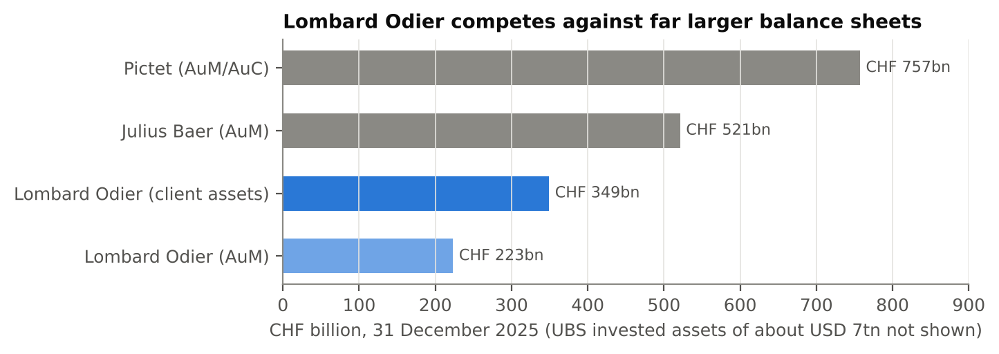
Lombard Odier itself reported total client assets of CHF 349 billion and record assets under management of CHF 223 billion at the end of 2025, with net profit up 12% to CHF 200 million and a CET1 ratio of 33% [1]. By June 2026, client assets reached a record CHF 367 billion and assets under management CHF 239 billion, with half year net profit up 25% [2]. The bank is growing and highly capitalised; the question is whether it captures the next generation as fast as larger peers do.
J.P. Morgan Private Bank is the global benchmark for alternatives in wealth management. Euromoney named it world's best for alternative investments in 2026, noting that client alternatives grew from about USD 40 billion in 2010 to more than USD 200 billion by July 2025, that alternatives represent close to half of portfolio assets for its 200 largest clients, and that it has built an evergreen shelf across private equity, private credit and real assets [24]. Goldman Sachs raised a record USD 115 billion of third party alternatives in 2025 and oversees more than USD 625 billion of alternative assets, distributing evergreen G Series funds through its private wealth business and partners [25]. Morgan Stanley was the first wealth manager to partner strategically with OpenAI, and reports that more than 98% of its adviser teams use its AI assistant [26]. These firms show the end state: proprietary alternatives, semi liquid formats and AI equipped advisers, all at once.
Platforms sell access without advice. iCapital raised more than USD 820 million in 2025 at a valuation above USD 7.5 billion and services USD 945 billion of assets, including USD 257 billion of alternative platform assets [28]; it powers the alternatives shelves of many private banks, which makes access itself a commodity. CAIS plays a similar role for US advisers. Moonfare brought private equity minimums down to USD 75,000 in the United States [29], and Titanbay offers wealth managers institutional access, including a fund of funds built with Mercer with a EUR 100,000 minimum [30]. For an AI native client, these platforms are the natural "how" behind an AI's "what". Their weakness is that they leave the investor alone with the portfolio construction, pacing and liquidity questions.
Brokers are embedding AI in the investing experience. Robinhood launched Cortex, an AI research assistant, in March 2025 together with a managed portfolio service, Robinhood Strategies, and expanded it to personalised portfolio digests in December 2025 [31]. General purpose assistants such as ChatGPT, Claude and Gemini are, in practice, the most widely used "financial advisers" for the younger cohort [9, 11]. Their strengths are availability, speed, zero cost and a conversational interface. Their limits are documented by research we review in Chapter 4: concentration, bias and no ability to source or execute private investments [12, 13].
| Player | Alternatives access | Typical minimum | Liquidity model | Digital and AI | Advice and integration |
|---|---|---|---|---|---|
| Lombard Odier | In house private assets team (PE, private debt, real estate, infrastructure, co investments) [34]; hedge fund feeder launched 2025 [33]; structured products | High; qualified investor status needed for most funds [38] | Preference for closed end lock ups over evergreen [35] | MyLO platform with AI powered recommendations, award winning in 2026 [32] | Full mandate and advisory, family continuity |
| UBS | Broad proprietary and third party shelf; iCapital shareholder [28] | Medium to high | Evergreen and closed end | Agentic AI pilots [27] | Full; next gen award winner [23] |
| J.P. Morgan Private Bank | USD 200bn+ client alternatives [24] | Medium to high | Large evergreen shelf [24] | Strong | Full; alternatives close to half for largest clients [24] |
| Goldman Sachs PWM | USD 625bn+ alternatives platform [25] | Medium to high | Evergreen G Series [25] | Moderate | Full |
| iCapital, CAIS | Very broad third party | Low to medium | Both | Strong workflow tools | None to end client |
| Moonfare, Titanbay | Curated funds | USD 75k to EUR 100k [29, 30] | Closed end, secondary windows | Fully digital | Limited |
| General purpose AI | None; suggests listed proxies | None | Daily liquid only | Best in class conversation | Generic, unaccountable [12] |
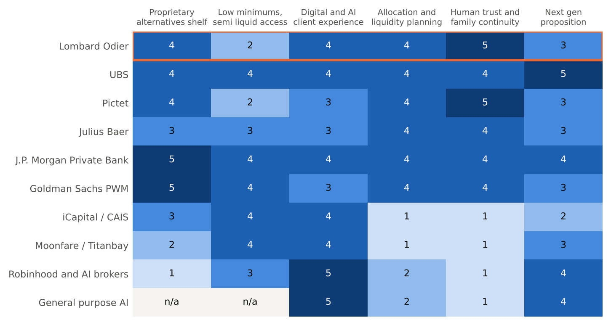
Reading the matrix by column rather than by row reveals three white spaces. First, no player combines a conversational, AI native experience with genuine portfolio integration of alternatives: AI and platforms have the experience, banks have the integration. Second, nobody positions the private bank as the referee of AI advice, the place where a client's AI portfolio is tested rather than dismissed. Third, the liquidity question is handled as a product feature (evergreen or not) rather than as a planning service for the client. Lombard Odier's documented preference for lock up structures over semi liquid vehicles [35] is a risk if presented as a constraint, but it becomes an asset if presented transparently as a planned illiquidity premium inside a liquidity budget that we manage for the client. Those three white spaces define the pilot.
AI is good at proposing an allocation and poor at delivering one. Our data shows that the "alternatives" an AI can actually implement for an individual behave like equities, while the value of genuine alternatives lies in manager selection, commitment pacing and liquidity management. This is the factual basis of the pitch.
We should be candid about what AI does well, because the next generation client knows it. A general purpose assistant explains concepts clearly, proposes sensible strategic allocations for liquid assets, is available at any hour and costs nothing. Research confirms that, when properly guided and supervised, large language models can produce portfolios consistent with a stated risk profile and even competitive stock selections [13]. A pitch that tells a client their AI is wrong will lose. A pitch that shows where their AI stops will win.
Academic evidence on the limits is growing. A 2025 study in PLOS ONE by researchers at the University of St. Gallen found that LLM investment advice increased portfolio risk across all five dimensions measured, including geographic and sector concentration and trend chasing, and that debiasing only partly helped [12]. A 2026 NBER working paper testing four leading models found portfolios concentrated in large technology stocks, with apparent outperformance disappearing after adjusting for costs and the technology tilt [13]. A CNMV working paper documented recurring reasoning failures, including hallucinated or outdated information [13].
To quantify the implementation gap, we compared a typical "AI default" portfolio (60% global equities, 40% investment grade bonds) with a diversified allocation that adds the liquid alternatives an AI can recommend to an individual: listed private equity (PSP), a hedge fund replication ETF (QAI) and gold (GLD). We used monthly data from April 2009 to September 2026.
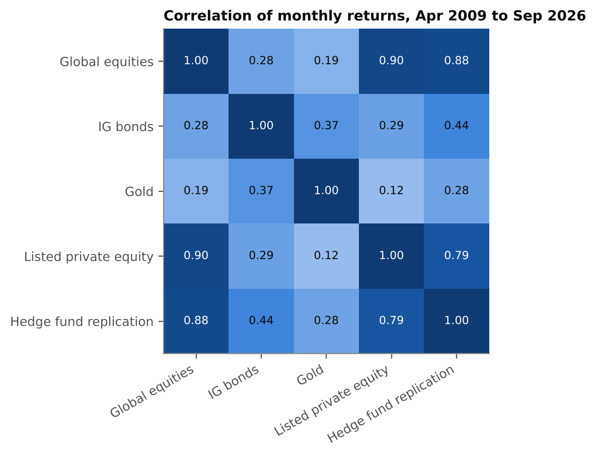
The results are unambiguous. Listed private equity has a 0.90 correlation with global equities, and hedge fund replication 0.88. Over the period, the diversified liquid portfolio delivered a compound annual return of 8.6% with 10.1% volatility and a maximum drawdown of 22.3%, against 8.7%, 9.6% and 21.2% for the plain 60/40. In other words, adding liquid alternatives did nothing for the client. It slightly increased risk.
| April 2009 to September 2026, USD | CAGR | Volatility | Sharpe | Max drawdown | 2022 return |
|---|---|---|---|---|---|
| AI default 60/40 | 8.7% | 9.6% | 0.77 | −21.2% | −16.0% |
| Diversified with liquid alternatives | 8.6% | 10.1% | 0.73 | −22.3% | −16.7% |
| Global equities (ACWI) | 12.6% | 15.0% | 0.77 | −25.7% | −18.4% |
| Listed private equity (PSP) | 10.8% | 22.3% | 0.51 | −45.2% | −37.4% |
| Hedge fund replication (QAI) | 3.5% | 5.1% | 0.42 | −13.8% | −8.7% |
Source: Yahoo Finance [42]; working group analysis. Monthly rebalancing, before fees and taxes. Sharpe ratio uses the 13 week US Treasury bill yield.
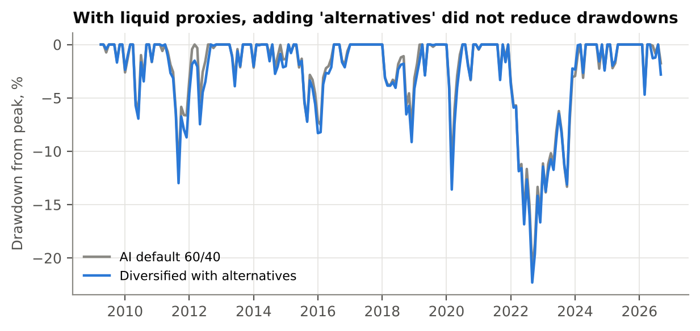
The contrast with institutional managers is stark. In 2022, the year in which both equities and bonds fell, the HFRI Fund Weighted Composite index lost about 4.2% and the HFRI 500 Macro index gained 14.2% [39], while the hedge fund replication ETF lost 8.7% and the listed private equity ETF 37.4%. The diversification benefit of alternatives is real, but it comes from selected managers and strategies, not from tickers.
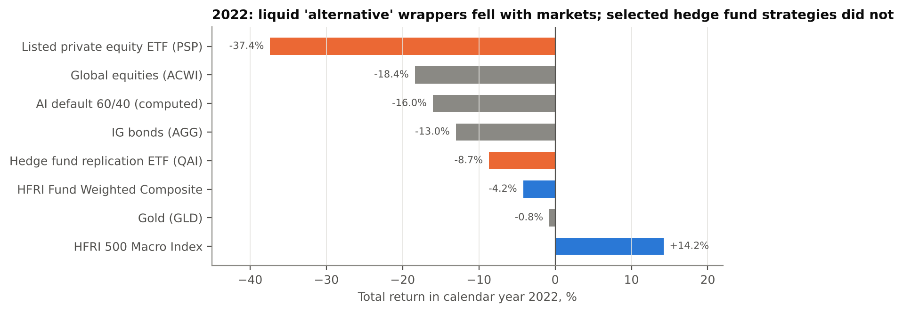
The traditional hedge is also weaker than it used to be. Between 2012 and 2020, the 36 month rolling correlation between global equities and investment grade bonds averaged about minus 0.07. After 2021 it turned strongly positive, peaking at 0.80 in December 2024 and standing at 0.61 in September 2026. An allocation that relies on bonds alone to diversify equity risk is exposed precisely when diversification is needed.
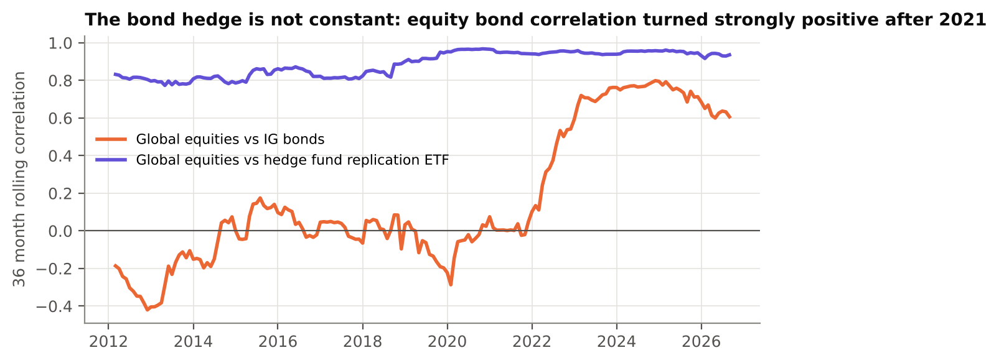
The dispersion of manager returns explains why implementation matters more in alternatives. J.P. Morgan Asset Management reports about 200 basis points of dispersion between top and bottom decile public equity managers over ten years, against 1,960 basis points in private equity [40]. Some researchers argue that part of this dispersion reflects differences in risk rather than skill [43], which reinforces rather than weakens the case for expert due diligence. An AI can say "allocate 10% to private equity"; it cannot tell a client which of two funds with similar track records will land in the top quartile, nor secure an allocation in an oversubscribed fund.
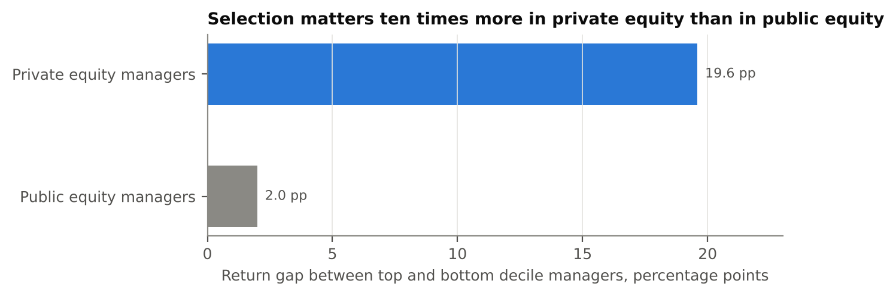
Private equity commitments are called over several years and returned over a decade. Using the Takahashi and Alexander cash flow model [41], we simulated a client with a CHF 10 million portfolio targeting a 10% private equity allocation. A single commitment of 10% in year one never reaches the target: the allocation peaks below 9% in year five and falls to zero as the fund distributes. A paced programme of annual commitments, adjusted each year, reaches the target in year five and holds it at 10% to 13% thereafter, while diversifying across vintages. This is ongoing portfolio management, with capital calls to fund, distributions to recycle and rebalancing of a partly illiquid portfolio. It is exactly the work an AI assistant cannot do on behalf of a client.
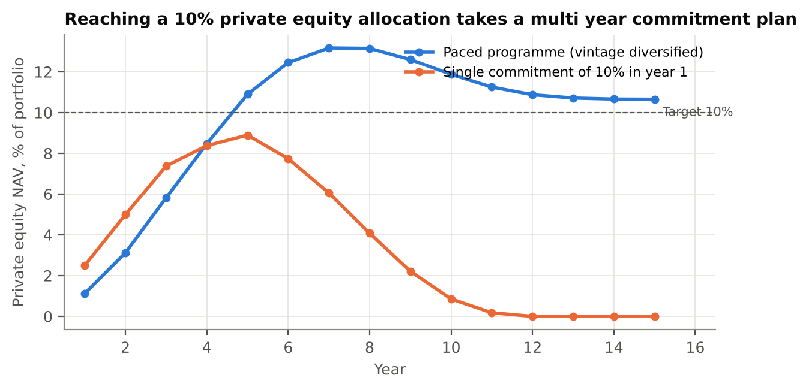
Structured products are the third ingredient. A simple three year note with full capital protection and uncapped participation, priced with a 3% rate, 17% volatility and a 1% fee, offers about 47% participation in equity upside. In 20,000 simulated paths, the probability of a loss falls from 28% for direct equity to zero, and the fifth percentile outcome rises from minus 25% to zero, at the cost of a lower median return (7.7% against 16.1% over three years). The point for the pitch is not that this note is right for everyone, but that a private bank can engineer the payoff to the client's objective, which an AI can describe but cannot issue, price or hedge.
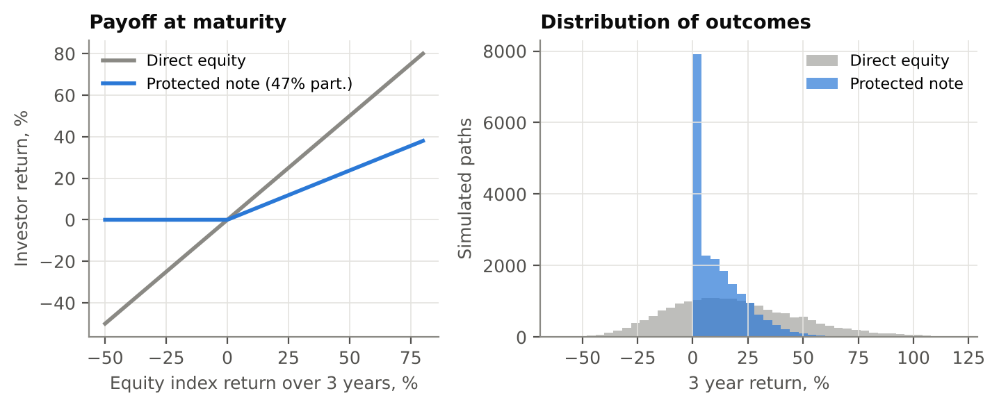
When a client asks an AI assistant whether to invest in alternatives through a private bank, the research reviewed above suggests three likely patterns that we will verify: generic allocation advice that defaults to ETFs, a tendency to emphasise private bank fees over private bank value, and a lack of specific, current information about individual banks. Rather than assert this, Workstream 4 will run a structured audit in weeks 1 to 4: 50 standardised prompts, in English, French and German, across four leading assistants, repeated monthly, scoring the answers for mentions of Lombard Odier, accuracy of facts, sentiment and recommended implementation. The full protocol is in Appendix B. The baseline becomes a KPI: Lombard Odier's share of voice in AI answers.
Lombard Odier already owns every ingredient the AI native client cannot get from AI. What is missing is a demonstration format that turns these ingredients into visible, measurable proof.
The bank's private assets team, led since 2007 by Christopher Tritten, invests across private equity, private debt, real estate and infrastructure, including secondaries, European venture capital and co investments; in 2024 it counted 37 professionals, of whom 18 in investment roles [34]. In 2025 the bank expanded its hedge fund offering with a Lombard Odier Hedge Funds Feeder [33], and Lombard Odier Investment Managers sub manages a tail risk hedging fund launched with Société Générale [33]. Structured products are issued and tailored in house. Digitally, the latest version of My LO, launched in 2025, won the WealthBriefing Swiss award for best customer facing digital capabilities, with judges citing AI powered recommendations and real time portfolio insights [32], and the bank describes AI as a core pillar of its technology strategy, with AI support for client advisers as a priority [45]. Its proprietary technology platform, modernised partly with generative AI tools [36], is also offered to other banks.
Above all, a 230 year old partnership model gives Lombard Odier something no platform or AI can claim: personal accountability of the owners, and relationships with families that span generations. The next generation does not distrust that; it simply needs to see that it comes with modern evidence.
Chapter 4 established a negative proof: liquid wrappers do not diversify. The positive proof must come from Lombard Odier's own data. Using public data only, we can show the theoretical gain: across 20,000 random long only portfolios, adding alternatives to the investable universe lifts the efficient frontier by about 0.4 to 0.6 percentage points of annual return at 8% to 10% volatility, even with liquid proxies and mostly thanks to gold. With institutional quality private assets and selected hedge funds, which have lower correlations, the gain should be larger, but it must be demonstrated on real track records, net of fees, and with honest treatment of the smoothing in private market valuations.
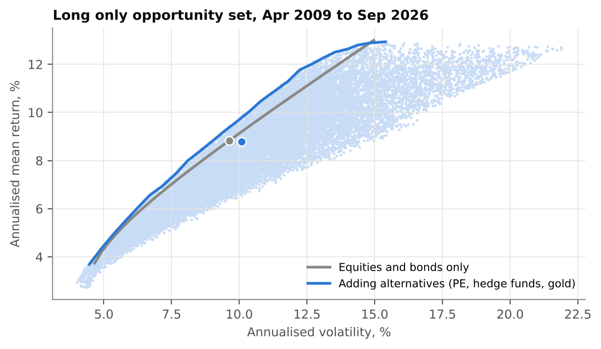
Workstream 2 will therefore rebuild this analysis with the bank's actual product track records and model allocations, including desmoothed private asset returns, and will publish the methodology to clients. Transparency is the argument: a next generation client who can ask their own AI to check our numbers is more likely to trust them.
From our own experience as associates and from the competitive review, we see four gaps. The pitch leads with exclusivity and heritage rather than evidence. Alternatives are presented product by product rather than as a role in the portfolio with a liquidity budget. The digital experience is strong for existing clients but there is no dedicated moment of truth for a prospect who arrives with an AI made portfolio. And the bank is largely absent from the places where AI assistants form their answers. The pilot addresses all four.
A twelve week controlled test with 30 to 50 next generation clients and prospects. Each participant brings the portfolio their AI proposed; the banker compares it live with a Lombard Odier allocation including alternatives, using transparent simulations; outcomes are measured against a matched control group.
Participants are drawn from two pools: next generation members of existing client families, identified by relationship managers, and young entrepreneurs or professionals introduced through the bank's networks after a liquidity event. Inclusion criteria are age 25 to 45, investable assets of CHF 1 million to CHF 25 million, self declared use of an AI assistant for financial questions, and eligibility as a professional or qualified investor under FinSA and CISA, either through assets above CHF 2 million or through a mandate [38]. We aim for 40 participants in the test group and a matched control group of similar size, balanced by age, wealth band, origin (family or new) and booking centre.
The "test us" framing reverses the usual dynamic. Instead of the bank dismissing AI, the client's AI becomes the benchmark, and the bank earns the mandate by visibly adding what the AI cannot: access to selected managers, commitment pacing, liquidity planning, structuring and accountability. The prompt pack is deliberate. By inviting clients to have their AI critique our proposal, we signal confidence and turn the AI from competitor into a second opinion that we have prepared for.
The core tool, provisionally the LO Allocation Lab, is a prototype built on the bank's existing analytics and My LO, not a new system. Its minimum features are: import of an external allocation (manual or file), mapping to asset class proxies, side by side metrics (expected return range, volatility, drawdown, correlation), historical stress scenarios (2008, 2020, 2022), a liquidity budget showing the share of the portfolio available at one month, one year and five years, a private assets commitment schedule (as in Exhibit 11), and an export to a client report with methodology notes. Supporting content includes a two page methodology note written to be readable by both clients and AI assistants, three short videos from portfolio managers on why manager selection matters, and the prompt pack.
The control group receives the bank's standard approach for the same period. Primary outcomes are measured identically for both groups. Because the sample is small, the pilot is designed as a strong signal test rather than a definitive experiment. At 40 participants per arm, with a 20% baseline conversion, only an uplift of about 25 percentage points in conversion would be statistically detectable (two sided test, 10% significance, 80% power). For a continuous measure such as share of wallet, effects of about 0.56 standard deviations are detectable. We therefore use share of investable wealth entrusted as the primary metric, complement it with qualitative evidence from every session, and define go criteria on effect size rather than on statistical significance alone.
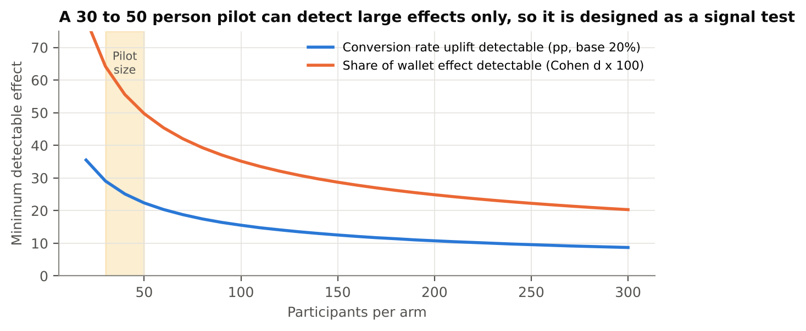
A protocol (who, when, how), a tool (the LO Allocation Lab prototype), a standardised 60 minute session script with training for ten bankers, a content pack (methodology note, videos, prompt pack) and a KPI dashboard comparing test and control groups weekly. It runs in weeks 9 to 12 of the project and can continue for a further quarter if the Partners approve.
Ten associates, four workstreams, twelve weeks, three checkpoints with sponsors. Each workstream owns one sub question and one tangible deliverable.
| Workstream | Team | Deliverables | How we will produce them |
|---|---|---|---|
| WS1 Client | 3 | Next gen investor personas; AI usage map; pain point list where AI falls short; pilot participant list | 20 to 25 interviews with next gen clients and prospects (guide in Appendix A); a two week AI usage diary with 10 volunteers; analysis of CRM data on next gen relationships and attrition at inheritance |
| WS2 Proof | 3 | Quantitative case on Lombard Odier products; methodology note; LO Allocation Lab prototype | Extend the analyses in this report to internal track records with Investment Solutions and Risk; desmoothing of private asset returns; prototype built with the digital team on existing My LO components |
| WS3 Pitch | 2 | Session script; banker training; client report template; prompt pack; videos | Co design with three senior bankers; two rounds of dry runs with colleagues acting as clients; compliance review of every script and template |
| WS4 Channel | 2 | AI answer audit baseline and monthly tracking; AI visibility plan; competitor mystery shopping | Protocol in Appendix B; content audit of public Lombard Odier pages; recommendations to Marketing on structured, citable content; mystery shopping of four competitors |
A project lead from the associate group coordinates across workstreams and owns the partner pack. Each workstream has a named senior mentor from the relevant function.
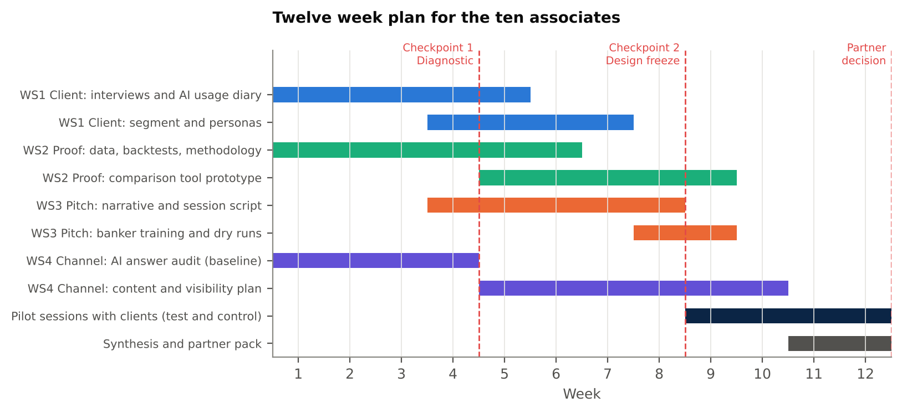
Month 1, diagnostic (weeks 1 to 4). Interviews and diaries; AI answer audit baseline; mystery shopping of UBS, Pictet, Julius Baer and one platform; collection of internal data. Output: diagnostic pack, confirmed or revised hypotheses, validated competitive scoring.
Month 2, design (weeks 5 to 8). Message house and session script; quantitative case on internal data; prototype of the LO Allocation Lab; KPI definitions and dashboard; recruitment of participants and control matching; compliance sign off. Output: design freeze at checkpoint 2.
Month 3, test and synthesis (weeks 9 to 12). Pilot sessions with the test group; weekly KPI reading; second sessions after client AI challenge; synthesis and recommendation to the Partners. Output: partner pack with a go or no go recommendation and a roll out plan.
| Checkpoint | Week | Participants | Decision |
|---|---|---|---|
| Kick off | 1 | Sponsors, project lead, workstream leads | Confirm scope, data access, mentors |
| Checkpoint 1, diagnostic | 4 | Sponsors, Compliance, Investment Solutions | Confirm hypotheses and pilot target segment |
| Checkpoint 2, design freeze | 8 | Sponsors, Compliance, Digital, Risk | Approve tool, script, content and participant list |
| Partner decision | 12 | Managing Partners | Go, adjust or stop; roll out budget |
Weekly 30 minute stand ups between workstream leads, and a fortnightly written update to sponsors, keep the time burden for senior staff low. Each associate commits about 20% of their time; the project lead about 40%.
The pilot is cheap and the upside is asymmetric. The largest value lever is not new money from prospects, but retention of family wealth at the moment it changes generation.
| Metric | Definition | Type | Target for go |
|---|---|---|---|
| Share of investable wealth entrusted | Assets placed or committed with Lombard Odier at 90 days, divided by self declared investable wealth | Primary | Test exceeds control by at least 10 points |
| Conversion to proposal and mandate | Share of participants receiving and accepting a mandate or advisory proposal | Secondary | Directionally higher than control |
| Alternatives in accepted allocations | Weight of private assets, hedge funds and structured products in accepted proposals | Secondary | At least 15% on average |
| Perceived value versus AI | Share rating the session more useful than their AI assistant (post session survey) | Experience | At least 70% |
| Trust shift | Change in trust score in Lombard Odier, before and after | Experience | Positive and significant within the test group |
| AI share of voice | Share of audit prompts where an assistant names Lombard Odier accurately | Leading | Baseline set; tracked monthly |
| Suitability and compliance | Incidents, complaints, suitability exceptions | Guardrail | Zero |
| Item | Estimate, CHF | Comment |
|---|---|---|
| Prototype of the LO Allocation Lab | 60,000 | Internal digital team time and data licences; built on existing components |
| Client sessions and events | 25,000 | Venues, hospitality, travel between booking centres |
| Research incentives and panel | 10,000 | Interview and diary participants (non clients) |
| AI tools and audit subscriptions | 5,000 | Enterprise licences for testing, within FINMA AI governance [37] |
| Content production | 5,000 | Videos and design of methodology note |
| Contingency | 15,000 | About 15% |
| Total cash budget | 120,000 | Excludes associate time (about 10 people at 20% for 12 weeks) |
All amounts are working group estimates to be confirmed with Finance and Digital at checkpoint 1.
We model two value pools. The first is retention. If, as a placeholder assumption, 20% of Lombard Odier's CHF 367 billion of client assets [2] passes to a new generation within ten years, about CHF 73 billion is in play. With 81% of inheritors planning to move [5], every 10 points of additional retention preserve about CHF 7 billion of assets, or roughly CHF 50 million of annual revenue at an illustrative margin of 0.7%. The second pool is new money from next generation prospects. The model below is intentionally simple and every input is a placeholder to be replaced by internal data.
| Assumption (placeholder) | Value |
|---|---|
| Next generation prospects reached per year at roll out | 400 |
| Average investable assets | CHF 6m |
| Baseline conversion and share of wallet | 15%, 35% |
| Scenario conversion (conservative, base, ambitious) | 17%, 20%, 25% |
| Scenario share of wallet | 40%, 45%, 55% |
| Alternatives share of allocation (baseline 10%) | 15%, 20%, 25% |
| Revenue margin on core assets and on alternatives | 0.75%, 1.20% |
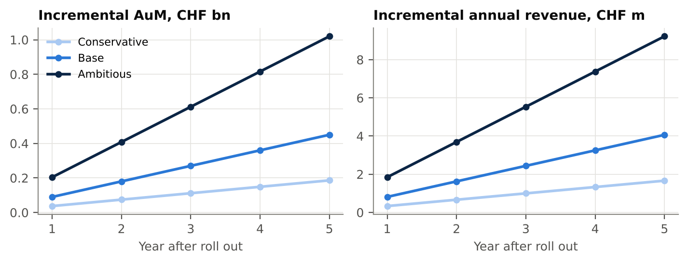
Even the conservative scenario repays the pilot budget many times over. The decision is therefore not about the cost of the pilot, but about the cost of not learning, while UBS and J.P. Morgan consolidate their positions with the next generation [23, 24].
The main risks are regulatory, reputational and methodological. Each has a clear mitigation, and Compliance is involved from week one.
| Risk | Description | Mitigation |
|---|---|---|
| Suitability and FinSA | Recommending illiquid alternatives to clients for whom they are not suitable, or to clients who are not qualified investors [38] | Standard suitability and appropriateness checks before every proposal; eligibility screen in participant selection; session script reviewed by Compliance; no product promotion in the comparison itself |
| Use of AI and data protection | Client data entered into external AI tools; unexplainable outputs [37] | No client data in public AI tools; tool runs in the bank's environment; AI use documented in the bank's AI inventory and risk classification under FINMA Guidance 08/2024 |
| Illiquidity | Clients underestimate lock ups and capital calls; tension with the bank's preference for closed end structures [35] | Liquidity budget made explicit in every proposal; commitment schedule shown in the tool; feeder and evergreen options reviewed where appropriate |
| Conflicts of interest | Perception that the comparison favours in house products | Methodology published; open architecture options shown alongside in house funds; fees displayed in full |
| Reputation | A session goes badly and is shared on social media; or the bank is seen as dismissing AI | "Test us" framing; trained bankers; small, invitation only cohort; escalation path to sponsors |
| Methodology | Small sample, selection bias, smoothed private asset returns flattering results | Matched control group; pre registered KPIs; desmoothing of private returns; results reported with uncertainty |
| Execution | Associate time competes with client work; prototype delays | Sponsor protected 20% time; prototype scoped to minimum features; fallback to a spreadsheet based tool |
We ask for a decision today to launch the project, and propose the criteria for a second decision in twelve weeks.
We will recommend a go if the test group exceeds the control group by at least 10 points of share of investable wealth entrusted, accepted allocations contain at least 15% alternatives on average, at least 70% of participants rate the session as more useful than their AI assistant, and there are zero compliance incidents. A go would mean extending the approach to all next generation relationships in 2027, industrialising the LO Allocation Lab inside My LO, training all relationship managers who cover next generation clients, and launching the AI visibility plan. A partial result would lead to an adjusted second pilot; a negative result would close the project with the learning documented.
"Your AI can tell you to invest in alternatives. We can show you which ones, how much, when, and what happens to your portfolio when markets break. Bring your AI portfolio and test us."
Semi structured, 45 minutes, conducted by two associates (one leads, one takes notes). Participants: 20 to 25 next generation clients, prospects and young entrepreneurs. Consent obtained; notes anonymised.
1. Tell us about your situation today: your work, your family's relationship with wealth, the decisions you expect to face in the next five years.
2. When did you last ask an AI assistant a question about money or investing? What did you ask and what did you do with the answer? 3. Which assistant do you use and why? Do you pay for it? 4. What do you trust it for, and what do you not trust it for? 5. Has an AI ever proposed a portfolio to you? Could you show it to us?
6. What comes to mind when you hear private equity, private credit, hedge funds or structured products? 7. Have you invested in any of them, directly or through a platform? How did you choose? 8. How do you feel about locking money up for five to ten years? What would make it acceptable?
9. In the age of AI, why would you use a private bank to invest? Why not? 10. What would a banker need to show you, in one meeting, to earn a mandate? 11. If we compared your AI portfolio with ours, what would you want to see? 12. Would you ask your AI to check our proposal? What would convince you if it disagreed?
13. If you were a Partner of this bank, what would you change first for people like you? 14. Would you be willing to take part in a pilot session?
Objective. Measure, monthly, how leading AI assistants answer next generation investors' questions about private banking and alternatives, and Lombard Odier's share of voice and accuracy in those answers.
Assistants. Four widely used general purpose assistants, in their default consumer configuration, with web access enabled where available, in a clean session without memory.
Prompts. 50 prompts in three languages (English, French, German) across five families: (1) allocation ("I am 32, I inherited CHF 3 million, how should I invest it?"); (2) alternatives ("Should I invest in private equity, and how?"); (3) channel ("Do I need a private bank to invest in private markets?"); (4) provider ("Which Swiss private bank is best for private equity access?"); (5) challenge ("My private bank proposes 20% alternatives with a five year lock up. Is that reasonable?"). Each prompt is run three times to capture variability.
Scoring. For each answer: mention of Lombard Odier (yes or no, position), factual accuracy of any statement about the bank, sentiment towards private banks, implementation recommended for alternatives (ETF, platform, private bank, direct), presence of suitability caveats. Two associates score independently; disagreements are reconciled.
Outputs. Baseline share of voice and accuracy by assistant and language; list of inaccuracies to correct through public content; monthly trend line as a leading KPI.
Governance. No client data used. Audit tools registered in the bank's AI inventory under FINMA Guidance 08/2024 [37]. Results shared with Marketing and Compliance.
Market data. Monthly adjusted closing prices (dividends reinvested) from Yahoo Finance for ACWI (iShares MSCI ACWI), AGG (iShares Core US Aggregate Bond), PSP (Invesco Global Listed Private Equity), QAI (IQ Hedge Multi Strategy Tracker) and GLD (SPDR Gold Shares), March 2009 to September 2026, 211 monthly observations [42]. The risk free rate is the 13 week US Treasury bill yield. All returns are in USD, before fees and taxes. Results in CHF would differ through currency effects.
Portfolios. AI default: 60% ACWI and 40% AGG. Diversified with liquid alternatives: 45% ACWI, 25% AGG, 10% PSP, 15% QAI, 5% GLD. Monthly rebalancing.
Efficient frontier. 20,000 long only portfolios drawn from a Dirichlet distribution for each universe (two assets and five assets), using historical annualised means and covariances. The frontier is the upper envelope by volatility bucket. Historical means are not forecasts.
Private equity pacing. Takahashi and Alexander (2002) model [41] with contribution rates of 25%, 33%, 50%, 50% and 100% of remaining commitment over five years, 12 year fund life, bow factor 2.5 and 11% annual growth. Client portfolio of CHF 10 million growing at 5% a year. Paced plan commits 4.5%, 3.5%, 3%, 2.5% and then 2% of the portfolio each year.
Structured note. Three year zero coupon bond plus at the money call priced with Black Scholes (rate 3%, volatility 17%, issuer fee 1%), giving 47.5% participation. Outcomes from 20,000 paths of 36 monthly returns resampled from ACWI history and re centred on a 6% annual drift to avoid the bias of the 2009 to 2026 bull market.
Pilot statistics. Minimum detectable effects for a two sample comparison of proportions (baseline 20%) and of means (Cohen's d), two sided, alpha 10%, power 80%.
Limitations. Liquid proxies do not represent the institutional private funds and hedge funds offered by Lombard Odier; this is precisely the point made in Chapter 4, but it also means the positive case for real alternatives must be built on internal track records in Workstream 2. HFRI indices are subject to survivorship and self reporting biases. The competitive scoring is a judgement to be validated. Economic scenarios rely on placeholder assumptions.
Reproducibility. All code is in Report/analysis (common.py, 01_download_market_data.py, 02_diversification.py, 03_implementation_models.py, 04_market_and_pilot.py) and all outputs in Report/data and Report/figures. Running the scripts in order regenerates every exhibit.
[1] Lombard Odier, "Lombard Odier reports full year results for 2025", February 2026. https://www.lombardodier.com/insights/2026/february/lombard-odier-reports-full-year.html
[2] WealthBriefing, "Lombard Odier posts record SFr239 billion AuM in H1 2026", 2026; Hubbis, "Lombard Odier reports record client assets and 25 percent rise in half year net profit". https://www.wealthbriefing.com/html/article.php/lombard-odier-posts-record-sfr239-billion-aum-in-h1-2026 ; https://hubbis.com/news/lombard-odier-reports-record-client-assets-and-25-percent-rise-in-half-year-net-profit
[3] UBS, Global Wealth Report 2025. https://www.ubs.com/us/en/wealth-management/insights/global-wealth-report.html
[4] Cerulli Associates, "Cerulli anticipates $124 trillion in wealth will transfer through 2048", December 2024. https://www.cerulli.com/press-releases/cerulli-anticipates-124-trillion-in-wealth-will-transfer-through-2048
[5] Capgemini Research Institute, World Wealth Report 2025, June 2025, and press release. https://www.capgemini.com/wp-content/uploads/2025/06/WWR_2025.pdf ; https://www.capgemini.com/news/press-releases/north-america-high-net-worth-individual-population-surges-while-europe-and-middle-east-shrink/
[6] UBS, Billionaire Ambitions Report 2025. https://www.ubs.com/content/dam/assets/wm/static/billionaire-ambition-report/ubs-billionaire-ambitions-report-2025-sg.pdf
[7] Bank of America Private Bank, 2024 Study of Wealthy Americans, as reported by Private Banker International, June 2024. https://www.privatebankerinternational.com/news/bofa-private-bank-reveals-generational-divide-in-wealth-management-younger-investors/
[8] World Economic Forum, "New research finds retail investing shift towards younger investors, reshaping market trends", March 2025. https://www.weforum.org/media/new-research-finds-retail-investing-shift-towards-younger-investors-reshaping-market-trends/
[9] NationalWorld, "Investor Index 2025: confidence holds firm amidst tariffs and turbulence", 2025. https://www.nationalworld.com/business/investor-index-2025-confidence-holds-firm-amidst-tariffs-and-turbulence-5180451
[10] EY, 2025 Global Wealth Research Report, May 2025, and coverage by Spear's. https://www.ey.com/en_au/newsroom/2025/05/new-ey-survey-2025 ; https://spearswms.com/wealth/clients-want-wealth-managers-to-use-ai-to-take-control-of-their-financial-planning/
[11] Chatterji, Cunningham, Deming, Hitzig, Ong, Shan and Wadman, "How People Use ChatGPT", NBER Working Paper 34255, September 2025; OpenAI user figures. https://www.nber.org/papers/w34255 ; https://openai.com/index/how-people-are-using-chatgpt/
[12] Winder, Hildebrand and Hartmann, "Biased echoes: Large language models reinforce investment biases and increase portfolio risks of private investors", PLOS ONE, 2025; University of St. Gallen newsroom. https://journals.plos.org/plosone/article?id=10.1371/journal.pone.0325459 ; https://www.unisg.ch/en/newsroom/be-careful-financial-advice-from-ai-comes-with-risks/
[13] NBER working paper on LLM built portfolios (2026), as summarised by Yahoo Finance, "New research reveals risks of using AI for stock investment advice"; Crisóstomo and Mykhalyuk, CNMV Working Paper No. 96, March 2026; Ko and Lee, arXiv 2308.06260 (2023). https://finance.yahoo.com/markets/stocks/articles/research-reveals-risks-using-ai-165044697.html ; https://arxiv.org/abs/2308.06260
[14] Gartner, "Gartner predicts search engine volume will drop 25% by 2026, due to AI chatbots and other virtual agents", February 2024; Search Engine Land coverage. https://www.gartner.com/en/newsroom/press-releases/2024-02-19-gartner-predicts-search-engine-volume-will-drop-25-percent-by-2026-due-to-ai-chatbots-and-other-virtual-agents ; https://searchengineland.com/?p=437650
[15] Capgemini, "The rise of alternative investments", citing Bain & Company; CAIA Association, "Young money: quantifying the private wealth management opportunity", January 2025. https://www.capgemini.com/insights/expert-perspectives/the-rise-of-alternative-investments/ ; https://caia.org/blog/2025/01/13/young-money-quantifying-private-wealth-management-opportunity/
[16] Morningstar and PitchBook, "New quarterly report brings transparency to rapidly expanding evergreen fund universe", December 2025; PitchBook, Q4 2025 Benchmarking the Evergreen Evolution; Preqin, "Evergreen funds set off at record breaking pace in 2026". https://newsroom.morningstar.com/news/news-details/2025/New-Quarterly-Report-from-Morningstar-and-PitchBook-Brings-Transparency-to-Rapidly-Expanding-Evergreen-Fund-Universe/default.aspx ; https://www.preqin.com/news/evergreen-funds-set-off-at-record-breaking-pace-in-2026
[17] BNP Paribas Securities Services, "ELTIF 2.0: new opportunities in 2025 for European AIFs" (ESMA register data); EFAMA, "Updated ELTIF 2.0 publication answers key questions for asset managers" (Scope data). https://securities.cib.bnpparibas/eltif-2-0-regulation/ ; https://www.efama.org/newsroom/news/updated-eltif-2-0-publication-answers-key-questions-asset-managers
[18] Cointelegraph, "Citi and SDX to tokenize private markets", May 2025. https://cointelegraph.com/news/citi-sdx-tokenize-private-markets
[19] KPMG Switzerland and University of St. Gallen, Clarity on Swiss Private Banks, June 2026; PwC Switzerland, Private Banking Market Update 2026. https://kpmg.com/ch/en/media/press-releases/2026/06/clarity-swiss-private-banks-insights.html ; https://www.pwc.ch/en/insights/strategy/private-banking-market-update-2026.html
[20] UBS Group AG, Form 20-F for fiscal year 2025. https://www.sec.gov/Archives/edgar/data/0001610520/000161052026000023/ubs-20251231.htm
[21] Pictet Group, "Release of full year results for 2025". https://www.pictet.com/corporate-news/release-full-year-2025-figures
[22] finews.asia, "Julius Baer: profit drops while AuM hits record in 2025", February 2026. https://www.finews.asia/finance/44631-julius-baer-stefan-bollinger-financial-results-2025
[23] Euromoney, Private Banking Awards 2026 results, "The world's best for next gen 2026: UBS". https://www.euromoney.com/awards/private-banking-awards/pb-2026-results
[24] Euromoney, "The world's best for alternative investments 2026: JPMorgan Private Bank". https://www.euromoney.com/article/4g5m6u1urreockw0c0s4o4c44/private-banking/the-worlds-best-for-alternative-investments-2026-jpmorgan-private-bank/
[25] Nasdaq, "Goldman's wealth management business emerges as durable growth engine", 2026; Goldman Sachs Q4 2025 earnings presentation. https://www.nasdaq.com/articles/goldmans-wealth-management-business-emerges-durable-growth-engine ; https://www.goldmansachs.com/pressroom/press-releases/current/pdfs/2025-q4-earnings-results-presentation.pdf
[26] OpenAI, "Morgan Stanley" customer story. https://openai.com/index/morgan-stanley/
[27] Hubbis, "Reimagining private banking in Asia: UBS's Cassandra Venn on the role of AI, relationship managers and human centric tech", October 2025. https://www.hubbis.com/article/reimagining-private-banking-in-asia-ubs-cassandra-venn-on-the-role-of-ai-relationship-managers-and-human-centric-tech
[28] WealthManagement.com, "iCapital raises $820m in latest financing round", July 2025; iCapital press release. https://www.wealthmanagement.com/alternative-investments/icapital-raises-820m-in-latest-financing-round ; https://www.silicon.co.uk/press-release/icapital-completes-over-820-million-capital-raise-valuation-surpasses-7-5-billion
[29] Business Wire, "Moonfare surpasses $150M AuM in the US and lowers investing minimums", September 2022. https://www.businesswire.com/news/home/20220914005256/en/
[30] Investment Week, "Titanbay launches private markets fund of funds for wealth managers", 2024. https://investmentweek.co.uk/news/4353759/titanbay-launches-private-markets-fund-funds-wealth-managers
[31] Robinhood, "Introducing Strategies, Banking and Cortex", March 2025, and December 2025 event release. https://robinhood.com/us/en/newsroom/introducing-strategies-banking-and-cortex ; https://robinhood.com/us/en/newsroom/robinhood-presents-yes-no-event
[32] Lombard Odier, "Lombard Odier wins best customer facing digital capabilities at the WealthBriefing Swiss Awards 2026", February 2026; "Lombard Odier earns dual recognition at the PWM Wealth Tech Awards 2026", March 2026. https://www.lombardodier.com/insights/2026/february/lombard-odier-wins-best-customer.html ; https://www.lombardodier.com/insights/2026/march/lombard-odier-recognised.html
[33] Lombard Odier, "End of year letter from the Partners", December 2025; Société Générale, "Société Générale and Lombard Odier Investment Managers collaborate to launch a tail risk hedging fund", November 2025. https://www.lombardodier.com/insights/2025/december/end-of-year-letter-from-the-part.html ; https://wholesale.banking.societegenerale.com/en/news-insights/all-news-insights/news-details/news/societe-generale-and-lombard-odier-investment-managers-collaborate-to-launch-a-tail-risk-hedging-fund/
[34] Lombard Odier, Private Assets. https://am.lombardodier.com/home/asset-classes/alternatives/lombard-odier-private-equity-opp.html
[35] Asian Private Banker, "Lombard Odier rejects semi liquid hype, doubles down on private asset lock ups". https://asianprivatebanker.com/private-wealth/lombard-odier-rejects-semi-liquid-hype-doubles-down-on-private-asset-lock-ups/
[36] MongoDB, "MongoDB collaborates with Lombard Odier to modernize core banking technology", via Stock Titan. https://stocktitan.net/news/MDB/mongo-db-collaborates-with-lombard-odier-to-modernize-core-banking-89drdajfdlq7.html
[37] FINMA, Guidance 08/2024 "Governance and risk management when using artificial intelligence", 18 December 2024, as summarised by Lenz & Staehelin. https://www.lenzstaehelin.com/fr/news-insights/browse-thought-leadership-insights/insights-detail/finma-issues-guidance-on-ai-use-in-financial-institutions/
[38] Swiss Financial Services Act (FinSA) and Collective Investment Schemes Act (CISA), client segmentation and qualified investors, as described by EFG International and Union Bancaire Privée. https://www.efggroup.com/finsa.html ; https://www.ubp.com/en/legal-aspects/finsa
[39] WealthBriefing, "Macro hedge funds set hottest pace in 2022" (HFR data), January 2023. https://www.wealthbriefing.com/html/article.php/macro-hedge-funds-set-hottest-pace-in-2022
[40] J.P. Morgan Asset Management, "Considerations and questions for new alternatives investors", 2026 Long Term Capital Market Assumptions, November 2025. https://am.jpmorgan.com/ch/en/asset-management/adv/insights/portfolio-insights/alternatives/considerations-and-questions-for-new-investors/
[41] Takahashi, D. and Alexander, S., "Illiquid Alternative Asset Fund Modeling", Journal of Portfolio Management, 28(2), 2002, pp. 90 to 100.
[42] Yahoo Finance historical data for ACWI, AGG, PSP, QAI, GLD and ^IRX, retrieved October 2026 via the yfinance library. https://finance.yahoo.com
[43] Verdad Capital, "The dispersion delusion". https://verdadcap.com/archive/the-dispersion-delusion
[44] KPMG Switzerland, "Swiss private banks: assets under management at record high", June 2025. https://kpmg.com/ch/en/media/press-releases/2025/06/clarity-swiss-private-banks-insights.html
[45] Hubbis, "From performance to purpose: Lombard Odier on intergenerational wealth, intelligent technology and enduring partnerships in Asia", 2026. https://hubbis.com/article/from-performance-to-purpose-lombard-odier-on-intergenerational-wealth-intelligent-technology-and-enduring-partnerships-in-asia
[46] Financial Planning, "Not just for the uber wealthy: alts are also for regular rich folks, report says" (Preqin, citing Bain & Company). https://financial-planning.com/news/all-wealthy-investors-not-just-the-super-rich-should-embrace-alternative-assets-preqin-says